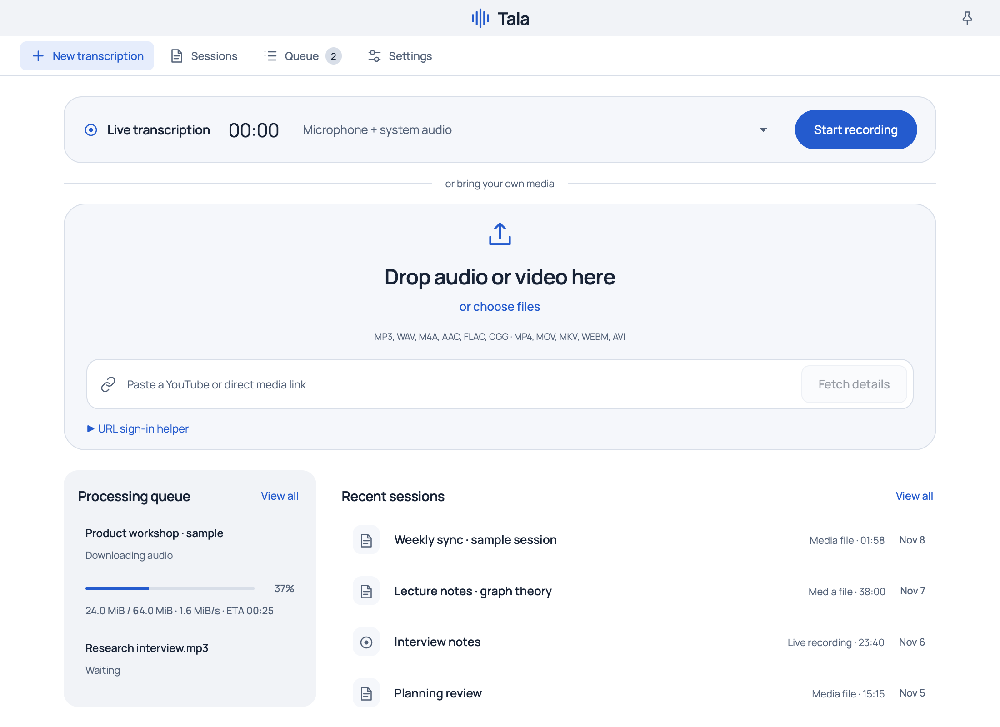
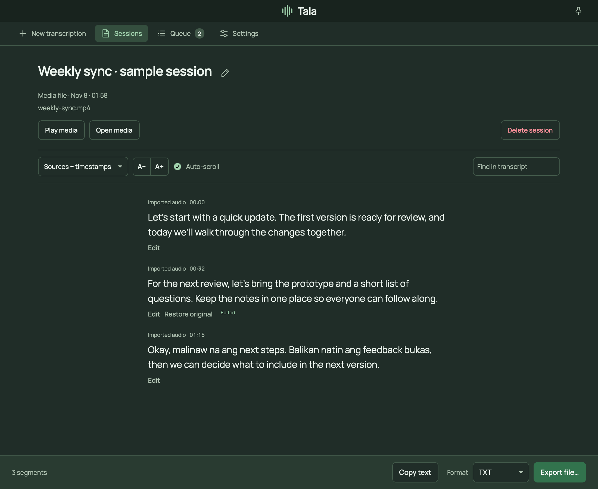
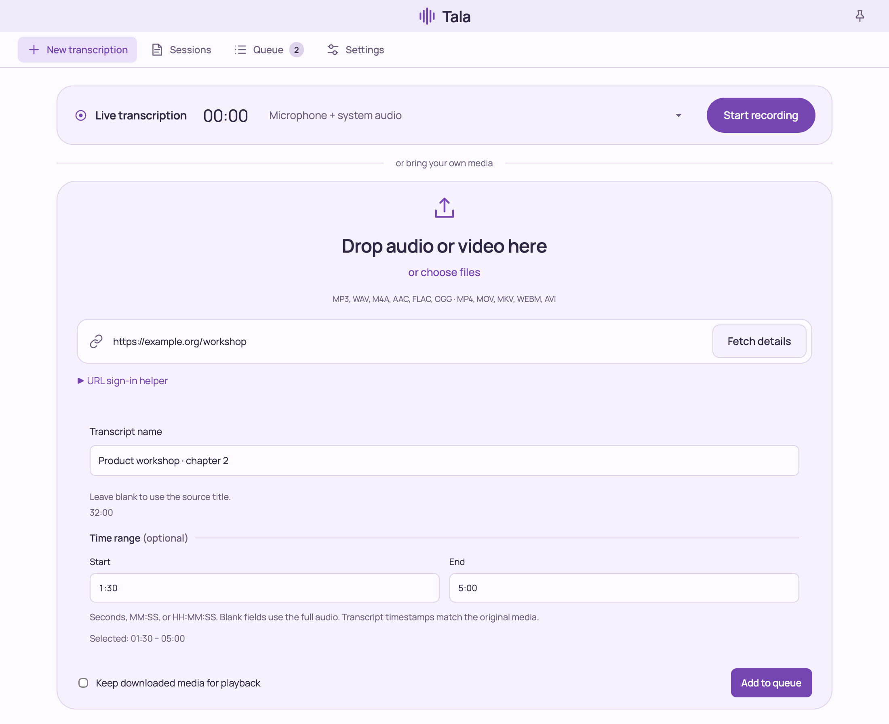

Record as you work
Capture your microphone, system audio, or both on macOS. The Linux CLI supports microphone capture.
macOS app and Linux CLI
Record live audio or bring your own files and links. Tala transcribes English, Filipino, Taglish, and other Whisper languages on your machine.

Capture your microphone, system audio, or both on macOS. The Linux CLI supports microphone capture.
Drop a file or paste a supported URL. Name the transcript, choose a time range, and follow download and transcription progress.
Automatic detection handles mixed-language speech. Use vocabulary hints for names and specialist terms.
Search sessions, correct text while keeping the original, and export plain text, Markdown, or subtitles.
After model setup, live recording and file transcription work offline. Use Metal on macOS or CPU inference on Linux.
Switch color schemes and text layouts, adjust the font size, or enable quick recording controls in the menu bar.


System Audio Can we review the slides on Friday?
Microphone Yes. I’ll share the draft first.
Download the macOS app or Linux CLI. To build from source, use Go 1.25 or later, CMake, pkg-config, and a native compiler toolchain.
make setup
make bundle
open dist/Tala.appIn Settings, choose a verified Whisper Large v3 Turbo model or download it. Grant audio and Documents access when prompted.
make setup
make build
./tala --ensure-modelOn Debian or Ubuntu, install libasound2-dev before building. Run ./tala --help for recording and import options.
File imports use FFmpeg and ffprobe. URL imports also use yt-dlp. The model download is approximately 1.6 GB.